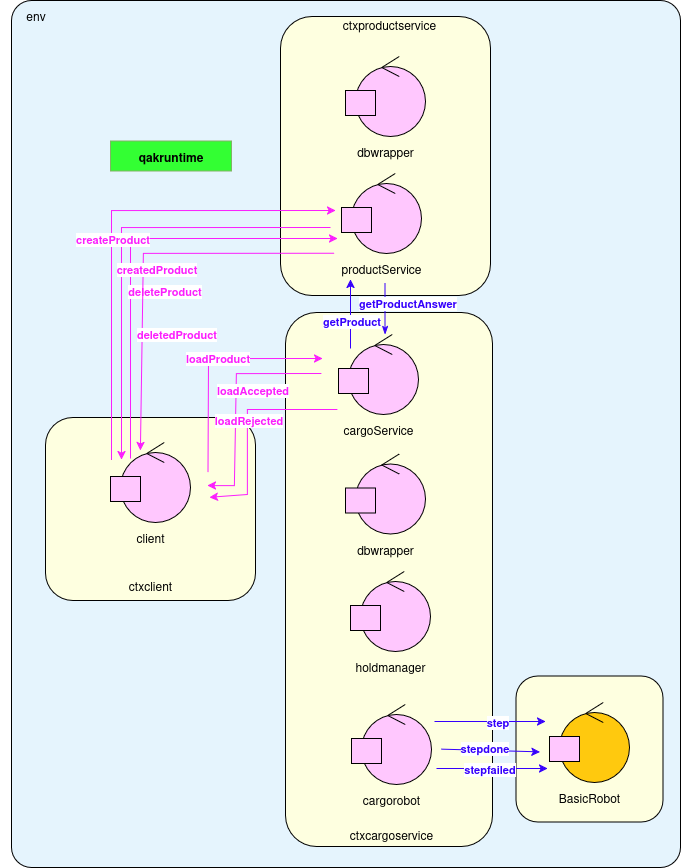
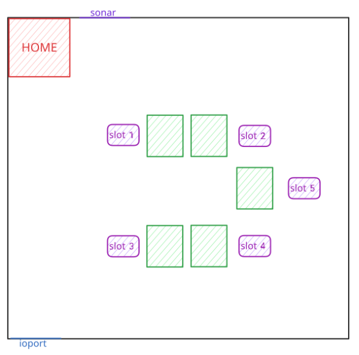
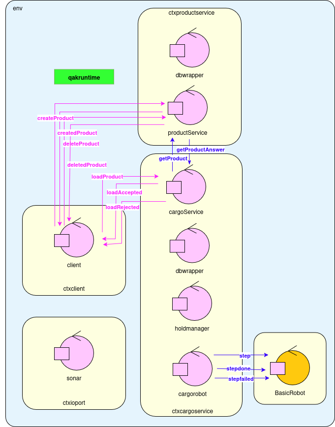
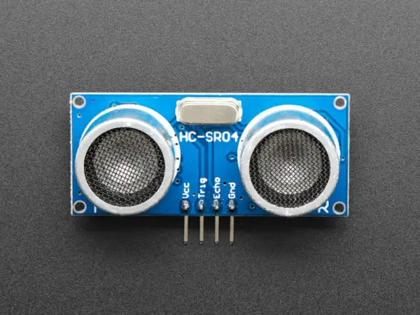
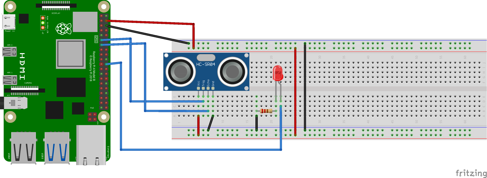
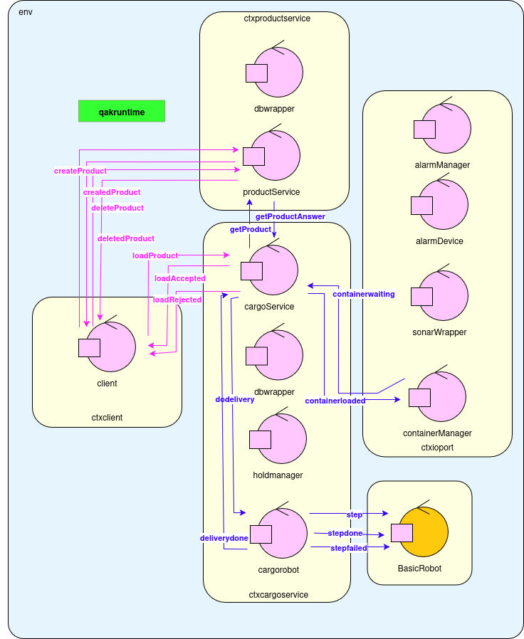

ISS Final Project - Maritime Cargo
Final exam theme a.a. 2024/2025
1. Introduction
A Maritime Cargo shipping company intends to automate the operations of load of
freight in the ship’s cargo hold. To this end, the company plans to employ a
Differential Drive Robot for the loading of goods in the ship's hold.
1.1 Our motto
There is no code without a project,
there is no project without problem analysis,
there is no problem without requirements.
1.2 Model architecture from sprint1

Figure 0 – Model architecture
1.3 Aims of sprint2
The aims of the current sprint are:
2. Requirements formalization
Within this sprint, we will be focusing on the requirements
RF5,
RF6,
RF11 and
RF12.
The starting point of the current sprint are the following tables, resulting from the requirement analysis from sprint0:
2.4 Working area
The robot will move around the following working area:

Figure 1 – Working area
The relevant areas are:
- HOME: upper left corner in which the robot has to stay when it's in idle
- ioport: opening in the lower left border from which the robot retrieves the containers
- slot{1..4}: they're the designated areas where the robot has to leave the containers
- slot5: permanently occupied area that the robot has to avoid
3. Problem analysis
3.1 Placing a product in the hold
The following steps describe the typical sequence of actions that occur when a
loadRequest is received for a product to be placed in the ship’s hold:
-
A loadRequest is issued to the
cargoservice for a specific product to be stored in the ship's hold.
-
The cargoservice verifies with the
productservice whether the product has been registered.
NB: Registration of a product does not imply that a load request must be issued.
It is possible that no load request will ever be created for a registered product.
-
If the product is registered, it requests an available slot to be assigned.
-
When sonar sensor detects that the a new product has arrived at the ioport,
i.e. when the sensor measures a distance D < DFREE/2 for a reasonable duration (i.e., 3 seconds),
it signals it to cargoservice.
-
Once detected, cargoservice send to the cargorobot the slot where to put the container.
Starting from its HOME position, cargorobot, picks up the product at the ioport, delivers it to the assigned slot,
unloads it, and returns to HOME.
Any new load request received during the above steps are queued and processed only after the robot has returned to its HOME position.
3.2 Special cases
While the standard procedure ensures smooth product placement in the hold,
several exceptional scenarios must be considered to guarantee system robustness,
reliability, and safety.
This section outlines the key exceptions that may occur during the handling of a loadRequest,
along with the expected system behavior in each case.
3.2.1 Unregistered product
Scenario: a loadRequest of an unregistered product is done.
System reaction: the loadRequest is rejected by cargoservice.
3.2.2 Unavailable slots
Scenario: unavailable slots.
System reaction: the loadRequest is rejected by cargoservice.
3.2.3 System failure
Scenario: a distance D > DFREE is registered by the sonar sensor for a reasonable time (i.e. 3s)
System reaction: the system stop itself and turn on a LED until a distance D ≤ DFREE is registered,
then it starts working again.
All the request done during the "stopped-period" are queued.
3.3 Software provided by the customer
The customer gives us the following already implemented softwares, which are useful for this sprint:
3.4 Logical architecture
After the problem analysis the following is the logical architecture.

Figure 2 – Logical architecture
Qak model of the logical architecture.
4. Project
We think it's better for this sprint realization to divide implementation into the following parts:
- Part 1: sonar sensor implementation
- Part 2: delivering operation
4.1 Part 1: sonar sensor implementation
To interface with the data produced by sonar sensor, the system requires a set of
specialized software components, each responsible for a distinct aspect of interaction and control.
These entities collectively ensure correct detection of container presence at the ioport and
system fault monitoring.
So, we implemented the following Actors:
-
sonarWrapper:
this is the software component which reads distances from a text file produced by the program sonar.py
(given by the customer) which is the only piece of software that interracts with the sonar sensor.
It performs periodic sampling of the measured distance (once every second) and emits distance update events.
These events are forwarded to the containerManager and alarmDevice for analysis.
The Python script (above) abstracts the hardware-specific communication, allowing the rest of the system to remain hardware-agnostic.
-
containerManager:
this is the ioport core logic entity responsible for processing distance
measurements. It evaluates if a container is present at the
ioport (when the distance D < DFREE/2 for a stable, predefined duration).
-
alarmDevice:
this component receive distances from the sonarWrapper and when D > DFREE for 3 seconds, it sends a
stop event to cargoservice. It also tells to ledPython25On.py
(given by the customer) to turn on the led.
When the sistem failure is solved it sends a resume event to cargoservice
and tells to ledPython25Off.py
to turn off the led.
As above, ledPython25On.py and ledPython25Off.py
are the only piece of software wich interracts with physical LED.
4.2 Part 2: delivering operation
In this sprint, the focus shifts to implementing the delivery workflow for the cargorobot, which is responsible for transporting
a container from the ioport to an assigned slot.
The pathfinding and map management logic was already completed in Sprint 1.
The software implementation follows what specified in point 5 of paragraph 3.1.
4.3 Physical implementation
For the physical implementation of the sonar we used a HC-SR04 sonar sensor.

Figure 3 – Sensor HC-SR04
We connected it to a RaspberryPi GPIO and it is controlled by the means of the Python script sonar.py.
We also connected the LED to the Raspberry Pi GPIO.
Here is the detail of links between Raspberry Pi GPIO and physical components:
HC-SR04 sonar's connections:- VCC : physical pin 4 (+5V)
- GND : physical pin 6 (GND)
- TRIG: physical pin 11 (WPI 0, BCM 17)
- ECHO: physical pin 13 (WPI 2, BCM 27)
LED's connections:- Anode: physical pin 22 (WPI 6, BCM 25)
- Catode: physical pin 20 (GND)

Figure 4 – Physical model
4.4 Messages
We add the following messages:
| Messages |
Type |
Sender |
Receiver |
Description |
| distance |
Event |
sonarWrapper |
- |
The distance mesured by the ioport (send each second) |
| stop |
Event |
alarmDevice |
- |
System must stop because of a system failure |
| resume |
Event |
alarmDevice |
- |
System can resume because system failure is solved |
| containerwaiting |
Request |
containerManager |
cargoservice |
There is a container waiting to be loaded at the ioport, cargoservice needs to be informed |
| containerloaded |
Reply |
cargoservice |
containerManager |
The container that was waiting to be loaded at the ioport has been correctly delivered to its assigned slot. After beeing notified by cargorobot, cargoservice tells it to containerManager |
| dodelivery |
Request |
cargoservice |
cargorobot |
cargoservice, informed by containerManager with containerwaiting, orders cargorobot to load the container waiting
at the ioport and to deliver it to the assigned slot |
| deliverydone |
Reply |
cargorobot |
cargoservice |
The container has been delivered correctly and the cargorobot has got back to its HOME position |
4.5 System stop behavior
When a stop message is emitted due to a system fault caused by unexpected sonar sensor data readings,
the system enters in a controlled stopped state.
cargoservice and containerManager are notified to stop by a stop message
emitted by alarmDevice.
We decide not to notify cargorobot with a stop message because we can have these two scenarios:
-
cargorobotis IDLE at HOME:
If the stop condition occurs while cargorobot is at its HOME position and has not received
a dodelivery, no action is required since cargoservice has been stopped.
The robot will remain idle at HOME and will not receive any new commands while the system is stopped.
-
cargorobotis executing a delivery:
If the system stop condition is triggered after the dodelivery message
has been sent to the cargorobot, the entire delivery process is considered
atomic and non-interruptible.
Since the container is assumed to be present at the ioport once a
dodelivery message is issued, it is essential that the cargorobot
completes the operation.
Once the delivery is completed and the cargorobot returns to HOME,
it naturally returns to the IDLE state, which aligns with the expected behavior under a system stop condition.
4.6 Logical architecture
The following is the finale logical architecture.

Figure 5 – Logical architecture
5. Test plans
| Test |
Involved Actors |
Description |
Files |
| Stop & resume |
- alarmDevice
- sonarWrapper
- cargoservice
|
This test verifies that the systems correctly reacts to both stop & resume events |
Qak: test_stopresume.qak
|
| Delivery operation |
- containerManager
- sonarWrapper
- cargoservice
- cargorobot
|
This test verifies that the delivery of a container to its assigned slot is done correctly
|
Qak: test_delivery.qak
|
6. Conclusions
During this sprint, we successfully completed the implementation of all functionalities related to the ioport
management and the container delivery process to the assigned slots.
Specifically, the following objectives were achieved:
- realization of dedicated components to read and analize data produced by the sonar sensor
(sonarWrapper, containerManager, and alarmDevice).
- accurate detection of product presence at the ioport and real-time handling
of system failure conditions triggered by sonar sensor anomalies.
- implementation of the cargorobot logic for performing automated container pickup and delivery,
including movement from HOME to ioport, delivery to the assigned slot,
unloading, and returning to HOME.
In addition, we developed and verified all mechanisms for system suspension and resume based on sonar sensor
input, ensuring compliance with safety requirements (RF11 and
RF12).
All components were fully tested, both individually and as part of end-to-end system flows,
and the sprint goals were completed within the planned timeframe.
This sprint represents a significant milestone toward a fully autonomous and sensor-driven cargo handling system.
This sprint laid the foundation for the next development phase, which is:
- Sprint3 - web-gui
The following one is the updated workplan:
| Sprint |
Start |
End |
Man-hours |
| Sprint3 |
21/07/2025 |
24/07/2025 |
11 |
Developing Team